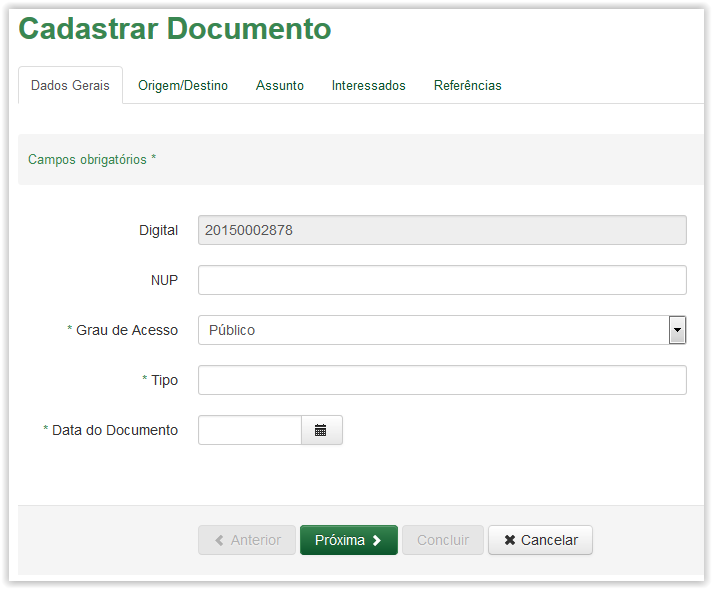
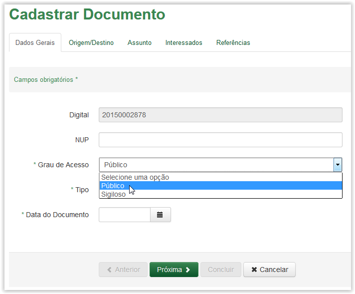
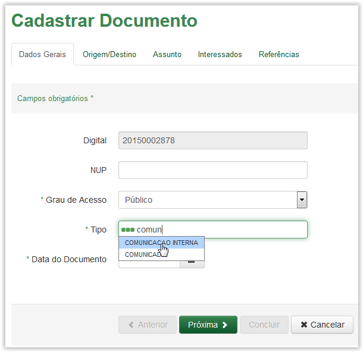
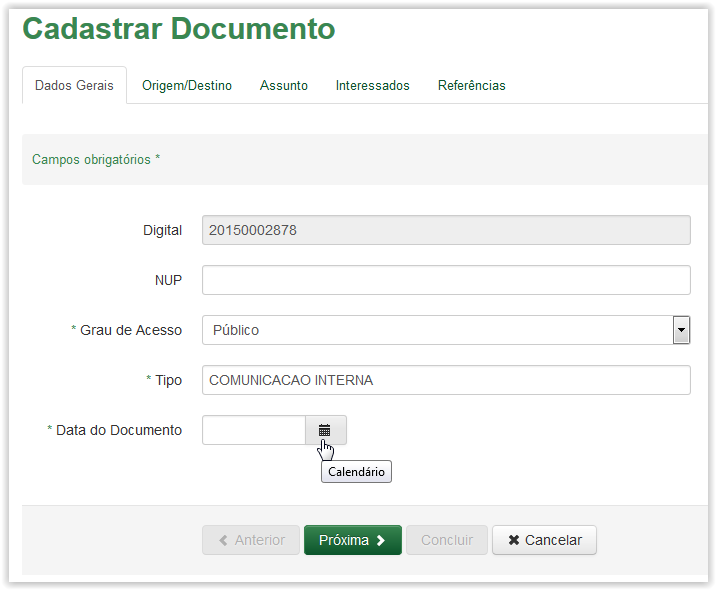
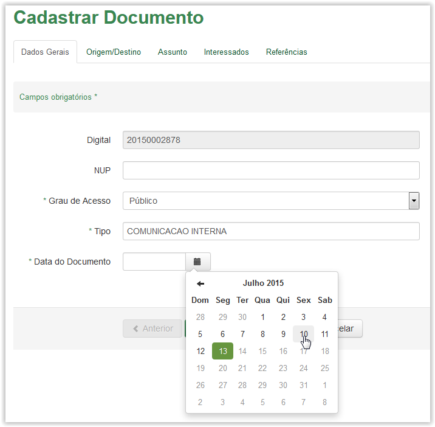
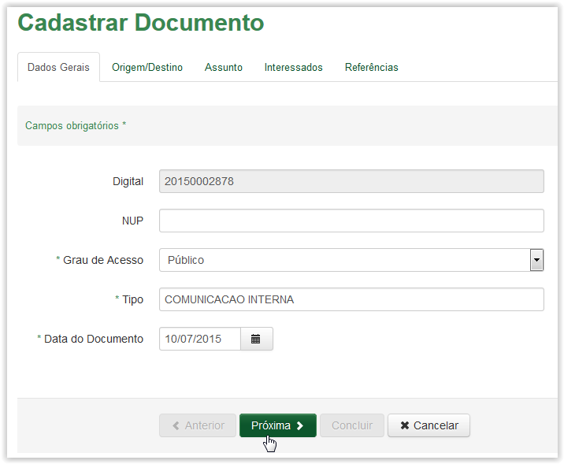
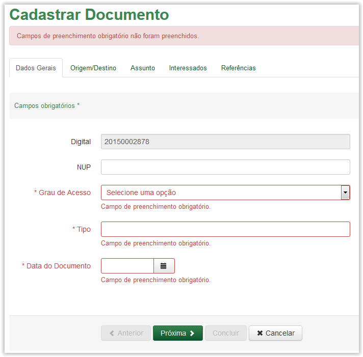

Cadastrar Documento externo
Após a validação da digital o sistema apresenta a tela Cadastrar Documento exibindo a aba Dados Gerais. Observe que alguns campos são obrigatórios (Veja Nota 1):

Cadastrar Documento - Aba Dados Gerais
Informações para cadastro de documento - Aba Dados Gerais:
Digital: |
Número da digital do documento |
NUP: |
Número único de protocolo vinculado à digital informada. |
Grau de Acesso: |
Grau de acesso que permite ou não a visualização do documento |
Tipo: |
Padrão de formatação da documentação. Por exemplo: memorando, ofícios, cartas e etc |
Data do Documento: |
Data de produção do documento |
 Preenchendo a aba Dados Gerais do cadastro de documento!!
Preenchendo a aba Dados Gerais do cadastro de documento!!

Selecionando o grau de acesso do documento na lista para preenchimento do campo Grau de Acesso

Selecionando o tipo de documento na lista para preenchimento do campo Tipo
 é apresentado um calendário para o preenchimento do campo (Veja Nota 2):
é apresentado um calendário para o preenchimento do campo (Veja Nota 2):
Clicando no ícone Calendário

Selecionando a data para preenchimento do campo Data do Documento
 para apresentar a próxima aba:
para apresentar a próxima aba:
Aba Dados Gerais - clicando no botão Próxima
IMPORTANTE!!
 Nota 1:
Nota 1:
Os campos obrigatórios são indicados pelo sinal de asterisco (*) na cor verde ao lado do nome. Quando algum ou nenhum campo obrigatório for preenchido, o sistema apresenta uma mensagem de erro: "Campos de preenchimento obrigatório não foram preenchidos.".

Comportamento da tela de Cadastro de Documento - Aba Dados Gerais, após clicar no botão Próxima sem preencher os campos obrigatórios.
 Nota 2:
Nota 2:
Nos campos de Data, ao clicar no ícone  o sistema apresenta um calendário:
o sistema apresenta um calendário:

Calendário
O calendário é exibido apresentando o mês e ano atuais  , além do dia corrente
, além do dia corrente  . Utilize as setinhas
. Utilize as setinhas  para navegar entre os meses (anteriores e posteriores) e clique no dia desejado
para navegar entre os meses (anteriores e posteriores) e clique no dia desejado  para que o campo de data seja preenchido:
para que o campo de data seja preenchido:

Preenchimento do campo de Data
 Nota 3:
Nota 3:
O campo NUP tem como principal função a informação dos dados da documentação para o Protocolo Integrado que será validado a partir de janeiro de 2016.
Created with the Personal Edition of HelpNDoc: Full-featured EBook editor